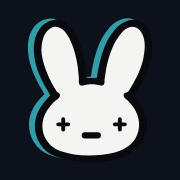
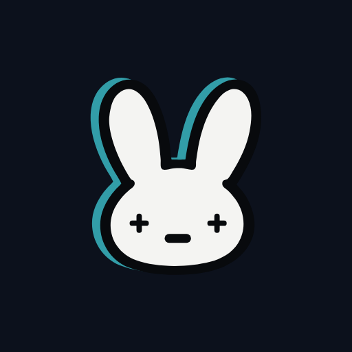
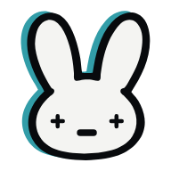
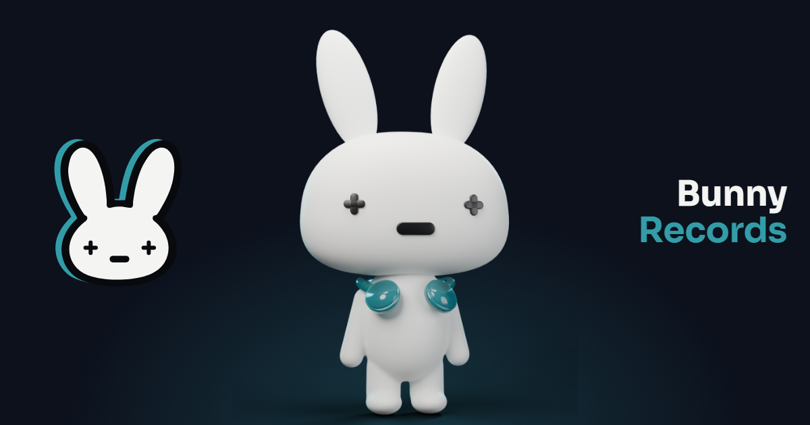

Bunny Records · iconos y metadatos
Lámina de revisión. Las simulaciones de Discord y WhatsApp son aproximadas.
Pestaña del navegador (favicon)
Pantalla de inicio (iPhone, Android, app instalada)



Al compartir el enlace (Open Graph 1200 × 630)

Bunny RecordsDescripción de la página (la pone la web según el idioma).
theme-color)Bunny Records
Descripción de la página…
Descripción de la página…
https://…
Archivos
favicon.ico(16, 32, 48) ·icon.svg·apple-touch-icon.png(180)icon-192.png·icon-512.png·icon-maskable-512.png·site.webmanifestog-default.png(1200 × 630, 190 KB): imagen por defecto. Las páginas tendrán la suya, generada por código (fase O).- Regenerar:
node design/logo/meta/build.mjs. Uso en la web:README.md.